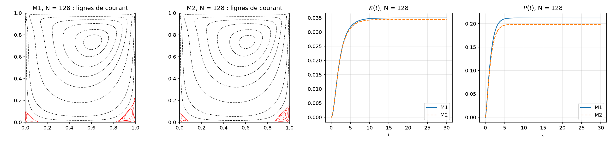
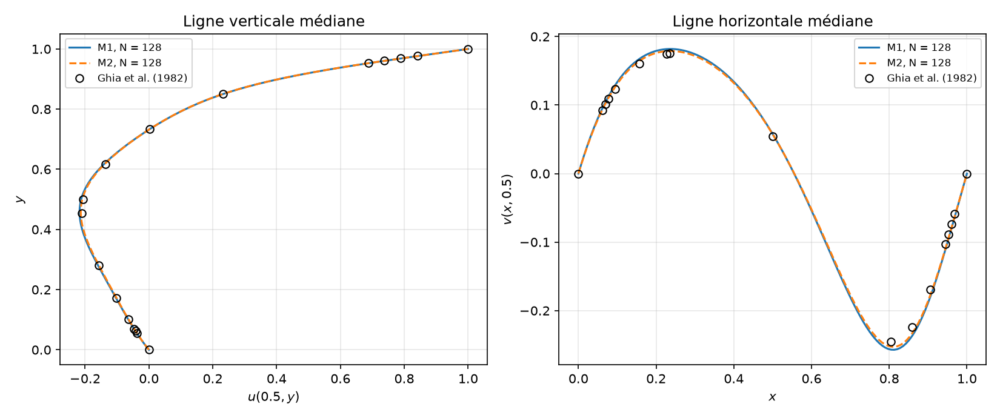
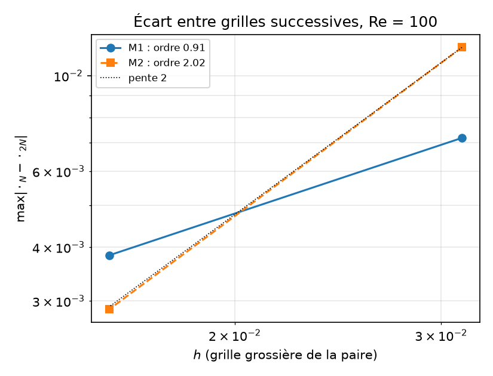
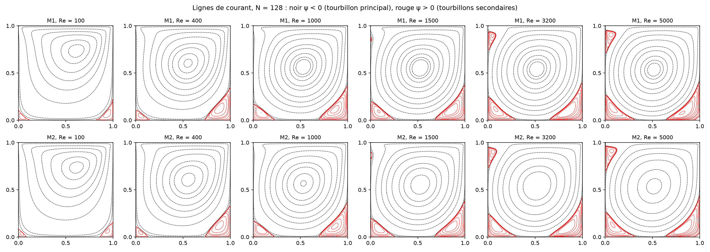
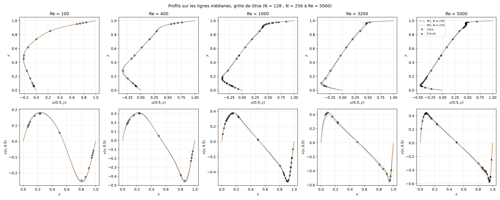
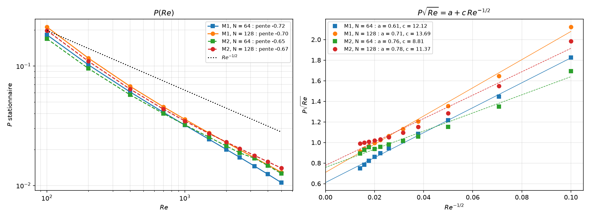

Durée indicative : 10 à 12 minutes pour les Parties A et B. Une section correspond à une diapositive. Les cadres « À dire » donnent le
discours, à reformuler librement ; les chiffres en gras sont ceux à retenir. Sources : notebooks A et B, Doc/partie_A_limites.md,
Doc/partie_B_limites.md, Doc/bilan_energie.md, ADR 0001 à 0004.
| $N$ | Dirichlet, $\sin\pi x\,\sin\pi y$ | Neumann (nœuds fantômes), $\cos\pi x\,\cos\pi y$ | itérations |
|---|---|---|---|
| 16 | $3.2\cdot10^{-3}$ | $3.2\cdot10^{-3}$ | 33 |
| 32 | $8.0\cdot10^{-4}$ | $8.0\cdot10^{-4}$ | 68 |
| 64 | $2.0\cdot10^{-4}$ | $2.0\cdot10^{-4}$ | 134 |


| $N$ | M1 − Ghia | M2 − Ghia | M1 − M2 |
|---|---|---|---|
| 32 | 0.010 / 0.021 | 0.009 / 0.009 | 0.020 / 0.028 |
| 64 | 0.009 / 0.016 | 0.003 / 0.006 | 0.009 / 0.011 |
| 128 | 0.006 / 0.012 | 0.004 / 0.008 | 0.004 / 0.004 |



| $Re$ | $N$ | M1 − Ghia | M2 − Ghia | M1 − Erturk | M2 − Erturk |
|---|---|---|---|---|---|
| 1000 | 128 | 0.011 / 0.025 | 0.014 / 0.008 | 0.006 / 0.007 | 0.017 / 0.021 |
| 3200 | 128 | 0.020 / 0.040 | 0.060 / 0.052 | – | – |
| 5000 | 256 | 0.019 / 0.022 | 0.018 / 0.013 | 0.005 / 0.005 | 0.019 / 0.026 |

Ce qui n'est pas présenté, avec la réponse courte à donner et les chiffres qui la justifient. Le détail est dans Doc/partie_A_limites.md,
Doc/partie_B_limites.md et Doc/bilan_energie.md.
Pourquoi une grille colocalisée, et pas une grille décalée (MAC) ?
Consigne : n'utiliser que les idées du cours, qui travaille sur grille colocalisée aux nœuds. Le prix à payer est le découplage pression–vitesse de la projection (question 2.11) ; on l'a mesuré et documenté plutôt que contourné.
D'où vient le pas de temps ?
Des trois limites de stabilité du cours (§5.3), avec une marge de 0.8 : Fourier en 2D, $\nu\Delta t/h^2 \le 1/4$ ; CFL de l'upwind, $\Delta t \le h/2$ ; et pour le schéma centré avec Euler, stable seulement grâce à la diffusion, $C^2 \le 2\,Fo$, ce qui donne $\Delta t \le 2\nu/U^2$. À haut $Re$, c'est cette dernière qui domine, et elle ne dépend pas de $N$ : environ $10^6$ pas à $Re = 5000$.
Pourquoi le schéma centré et pas l'upwind ?
L'upwind d'ordre 1 ajoute une diffusion numérique $D = \tfrac12 U h (1 - C)$ (équation modifiée, cours §5.4.2), très supérieure à $\nu$ à haut $Re$ : on simulerait un $Re$ effectif bien plus faible. Le centré est d'ordre 2 et stable sous la condition $\Delta t \le 2\nu$. C'est le choix « sage » ; l'upwind sert de contre-exemple.
Pourquoi le gradient conjugué, et pourquoi une tolérance de $10^{-8}$ ?
La matrice du laplacien est symétrique définie positive (au signe près) ; on n'a pas besoin de la stocker, le produit matrice-vecteur étant écrit directement ; le nombre d'itérations est en $O(N)$ (cours §4.7.3 et §4.8), et le départ à chaud depuis le pas précédent le réduit. Passer de $10^{-8}$ à $10^{-10}$ change les profils de $\sim 10^{-10}$, sept ordres de grandeur sous l'écart à Ghia, et double le nombre d'itérations.
Comment traitez-vous la condition de Neumann sur la pression ?
Existence : la matrice a pour noyau les constantes, le second membre doit donc être de moyenne nulle, et on la retire ($\iint \text{rhs}\,dS = 0$). Unicité : $p$ est défini à une constante près, on impose une moyenne nulle à chaque itération. Ordre : la première version (« bord = voisin », $\phi_0 = \phi_1$) n'était que d'ordre 1, car elle place la paroi en $h/2$ ; on est passé à des nœuds fantômes miroirs (dérivée centrée), pondérés par les poids des trapèzes pour garder la symétrie : ordre 2, et une erreur 200 fois plus petite à $N = 64$.
Comment calculez-vous la vorticité de paroi dans M2 ?
Par la formule de Thom : développement de Taylor de $\psi$ à la paroi avec $\psi = 0$ et $\partial_n\psi$ égal à la vitesse de paroi, ce qui donne au couvercle $\omega_w = -2\psi_1/h^2 - 2U/h$. Elle est d'ordre 1 localement mais d'ordre 2 globalement quand la couche limite est résolue (Erturk et al. 2005), ce qu'on vérifie à $Re = 100$ (ordre 2.07).
Pourquoi Numba, et combien de temps prennent les calculs ?
Numba est recommandé par l'enseignant : des boucles explicites qui reprennent les formules du cours, compilées. Mêmes résultats que numpy à $2\cdot10^{-10}$ près, 3 à 5 fois plus rapide. À $Re = 100$ : de 1 s à quelques minutes ; à $Re = 5000$ : de 37 min (M1, $N = 128$) à 22 h (M2, $N = 256$) sur un cœur de Ruche.
Comment savez-vous que le calcul est stationnaire ?
Par le résidu stationnaire $R = (f^{n+1} - f^n)/\Delta t$ : avec Euler explicite, c'est exactement le membre de droite discret, donc de combien le champ viole les équations stationnaires, et il ne dépend pas de $\Delta t$. On s'arrête quand $\|R\| < 10^{-3}\,\|R(30)\|$. Ce couple a été calibré à $Re = 5000$ par un calcul long jusqu'à $t = 1000$ : l'erreur due à l'arrêt reste $\le 5.1$ % de l'écart à Ghia (règle : 10 %), $K$ est stable à 1.5 % près et $P$ à $10^{-4}$ près.
Pourquoi le résidu de M2 porte-t-il sur $\omega$ et pas sur $u, v$ ?
$\omega$ est la variable que M2 fait évoluer. Mesuré sur $u, v$, le résidu valait exactement 0 à certains pas : le gradient conjugué, parti du $\psi$ précédent, était déjà sous sa tolérance et faisait 0 itération, donc $\psi, u, v$ ne bougeaient pas alors que $\omega$ avait évolué ; 13 calculs sur 23 s'arrêtaient à tort. Avec le résidu sur $\omega$, le même critère donne une erreur d'arrêt de 3.7 %.
Pourquoi M1 va-t-il jusqu'à $t = 1000$ à $Re = 100$, $N = 128$ ?
À $Re = 100$, l'écoulement est stationnaire avant $t = 30$ : le résidu de référence est déjà au niveau du bruit du gradient conjugué et ne peut plus être divisé par mille. Le calcul s'arrête au garde-fou ; le résultat est juste, simplement plus convergé que nécessaire.
Pourquoi M1 ne converge-t-il qu'à l'ordre 1 à $Re = 100$ ?
Pas à cause de l'espace : à $\Delta t$ fixé, M1 est d'ordre 1.91. Au stationnaire, la projection du cours vérifie exactement $$\nabla_h\cdot u = \Delta t\,\bigl(\Delta_h - D\tilde G\bigr)\,p,$$ où $\Delta_h$ est le laplacien résolu par le Poisson et $D\tilde G$ celui qu'applique la correction ; ils diffèrent sur grille colocalisée, donc la solution stationnaire de M1 dépend de $\Delta t$ (ordre $\approx 0.65$ en $\Delta t$ ; diviser $\Delta t$ par 2 change les profils de $1.8\cdot10^{-3}$ à $N = 64$). Avec le $\Delta t$ de stabilité, $\Delta t$ change avec $N$ et cette part domine. M2, sans projection, n'en dépend pas ($10^{-7}$).
Pourquoi $P$ ne converge-t-il pas en maillage ?
Aux deux coins du couvercle, la vitesse saute de $U$ à 0 : $\partial_y u \sim 1/r$, et $\int \nu\,\partial_y u\,dx$ diverge comme $\ln$ en continu. La grille coupe à $r \approx h$, d'où $P \approx P_{\text{régulier}} + c\,\nu\ln N$ avec $c \approx 4.2$ (M1 : $P = 0.154$, 0.182, 0.212 pour $N = 32$, 64, 128). On compare donc les $P$ à $N$ fixé.
La version d'ordre 1 de M1 était plus proche de Ghia : pourquoi l'avoir abandonnée ?
Elle traversait les valeurs de Ghia en convergeant : plus loin de M2, et de pente moins bonne. Être proche d'une référence ne prouve pas qu'un calcul est juste ; on juge sur l'écart entre grilles et sur l'écart à l'autre méthode.
Pourquoi M2 se dégrade-t-il plus vite que M1 ?
La seule différence de fond est au couvercle : M1 impose $u = U$, M2 reconstruit $\omega_w$ par Thom. Le développement de Taylor donne $$\omega_{\text{Thom}} = \omega_w + \frac{h}{3}\,\partial_n\omega\big|_w + O(h^2).$$ L'erreur est d'ordre 1 et sous-estime toujours $|\omega_w|$, car $|\omega|$ décroît en s'éloignant de la paroi ; elle vaut une fraction $h/(3\delta)$ avec $\delta \sim Re^{-1/2}$, donc elle est proportionnelle à $h\sqrt{Re}$. Mesurée sur les profils de M1 : $-2$ % à $Re = 100$, $-22$ % à $Re = 5000$ (pas $1/64$). Le résultat « ordre 2 global » de Thom suppose $h \ll \delta$ ; ici $h/\delta \approx 0.3$.
Pourquoi la vitesse sous le couvercle est-elle trop faible chez M2 ?
Thom s'écrit exactement $\bar u_1 = U - \tfrac{h}{2}|\omega_w|$ : c'est la vitesse moyenne d'un profil linéaire dans la première maille. Le vrai profil est convexe : à la paroi, $\nu\,\partial_y^2 u = \partial_x p$, et la pression monte vers le coin haut droit où le fluide vient buter. Le vrai profil est donc au-dessus de sa tangente : pour une même vorticité de paroi, Thom impose une vitesse trop faible. Mesuré à $Re = 3200$, $N = 128$ : $u(0.5, 0.953) = 0.41$ pour M2, contre 0.45 pour M1 et 0.46 pour Ghia ; l'écart est divisé par 3 à $N = 256$.
Et si c'était M2 qui avait raison, et M1 qui surestimait la vitesse ?
Non. Le signe de l'erreur de Thom ne dépend que de la convexité du vrai profil ; en raffinant, M2 rejoint M1 (et bouge 5 fois plus) ; et par rapport à Erturk, M1 est 3 à 5 fois plus précis. M1 n'est pas exact pour autant : $+1.7$ % sur $\psi_{\min}$ à $Re = 1000$ face à une valeur spectrale.
Avez-vous testé une meilleure condition de paroi ?
Oui, à titre de diagnostic : la formule de Woods, $\omega_w = \tfrac32\,\omega_{\text{Thom}} - \tfrac12\,\omega_1$, d'ordre 2 localement. Elle supprime la fausse solution de $N = 64$ à $Re = 3200$ ($\psi_{\min}$ passe de $-0.031$ à $-0.099$) et réduit l'erreur partout, ce qui confirme la responsabilité de Thom. Mais elle ne ramène pas M2 au niveau de M1 : à $N = 128$, $Re = 5000$, l'écart à Erturk passe de 0.11 à 0.058, contre 0.014 pour M1 (Thom explique environ la moitié du défaut). Et elle diverge à $Re = 5000$, $N = 64$ (moins stable, comme l'annonce la littérature) : on garde Thom.
Qu'est-ce que la « fausse solution » de M2 à $N = 64$ ?
Pour $Re \ge 3200$, M2 à $N = 64$ converge vers un état stationnaire où le tourbillon principal a perdu 75 % de son intensité ($\psi_{\min} = -0.03$ au lieu de $-0.12$) et où le fluide sous le couvercle est presque à l'arrêt. Il est vraiment stationnaire (résidu divisé par $10^7$). On la dit fausse parce qu'elle n'est pas convergée en maillage, qu'elle est absente chez M1 sur la même grille, et qu'elle contredit Ghia et Erturk. Ce n'est pas de la diffusion numérique : l'upwind échoue aussi, et une solution trop diffusée aurait un tourbillon intense, pas effondré. C'est le cas extrême du défaut de Thom, quand la couche limite tient dans une maille.
M2 est-il alors une mauvaise méthode ?
Non : à $Re = 100$, il converge plus proprement que M1 (ordre 2, solution indépendante de $\Delta t$) et il est moins cher par pas aux bas $Re$. Mais sa condition de paroi exige de résoudre la couche limite, soit environ $N \gtrsim 2\sqrt{Re}$. C'est notre exemple de choix « malheureux » à haut $Re$ sur grille grossière.
Ghia est-il une référence fiable ?
Ghia et al. (1982) : formulation $\psi$–$\omega$, ordre 2, 129² points jusqu'à $Re = 3200$ et 257² au-delà, sans étude de convergence chiffrée. Erturk et al. (2005), sur 401² à 601² points avec extrapolation de Richardson, donnent $\psi_{\min} = -0.1222$ à $Re = 5000$ contre $-0.1190$ chez Ghia : Ghia est 2.7 % trop faible (0.9 % à $Re = 1000$). D'où la comparaison systématique aux deux références.
À $Re = 5000$, M1 semble s'éloigner de Ghia quand on raffine : pourquoi ?
C'est l'erreur de Ghia. Par rapport à Erturk, M1 converge régulièrement : écart maximal 0.26, 0.013, 0.005 pour $N = 64$, 128, 256 ; sur $\psi_{\min}$, $+5.8$ %, $-2.0$ %, $+0.6$ % (convergence oscillante). Reste une part propre à M1 : à haut $Re$, $\Delta t = 2\nu$ est le même pour toutes les grilles, et sa solution dépend de $\Delta t$ (à $Re = 3200$, $N = 64$ : $K = 0.0471$, 0.0476, 0.0479 pour $\Delta t$, $\Delta t/2$, $\Delta t/4$). Cette part est petite : diviser $\Delta t$ par 2 change les profils de 2 à 3·10⁻³ à $N = 128$ et 256, contre environ 10⁻² entre ces deux grilles. Elle compte pour environ un tiers de l'écart de $\psi_{\min}$ à $N = 256$.
Pourquoi la pente globale de $P(Re)$ vaut-elle $-0.7$ et pas $-0.5$ ?
$P = a\,Re^{-1/2}$ (couche limite) $+\ c\,Re^{-1}\ln N$ (coins). Le second terme pèse aux $Re$ modérés ; les pentes locales passent de $-0.86$ à $-0.54$ pour M2 quand $Re$ augmente. Le terme de coin est plus grand chez M1, d'où un palier à $-0.62$.
Comment détectez-vous les tourbillons secondaires ?
Maximum de $\psi$ supérieur à $10^{-7}$ dans le quart de cavité concerné, bien au-dessus de l'erreur du gradient conjugué. BL et BR existent dès $Re = 100$ (très faibles, $\psi \sim 10^{-6}$) ; TL apparaît entre $Re = 1000$ et 1500, d'abord collé à la paroi (une maille).
Le bilan $dK/dt = P - \varepsilon$ est-il vérifié ?
En continu, oui : l'advection et la pression ne travaillent pas aux parois, et $\varepsilon = \nu\iint|\nabla u|^2 = \nu\iint\omega^2$ dans la cavité (démontré). En discret, au stationnaire, l'écart $(P - \varepsilon)/P$ va de $-36$ % à $+15$ % selon la méthode, $Re$ et $N$, et diminue quand on raffine (M1, $Re = 5000$ : $-36$ %, $-17$ %, $-9$ %) : c'est une erreur de discrétisation en espace. Retirer les coins ne le ferme pas, car $P$ et $\varepsilon$ y portent la même part. Pour M1, le défaut vient surtout d'un travail de la pression aux parois, nul en continu, porté à 97–100 % par le couvercle près des coins.
Que prévoyez-vous au-delà de $Re \approx 8000$ ?
La littérature place $Re_c$ entre 7400 et 8050. Points de vigilance tirés des Parties A et B : le coût ($\Delta t \le 2\nu$, environ $3\cdot10^6$ pas à $Re = 10^4$), la grille (M2 + Thom demande $N = 256$), et le fait qu'une instationnarité vue seulement sur grille grossière peut être numérique : Erturk trouve un écoulement périodique à $Re = 7500$ sur 129², stationnaire sur 257².